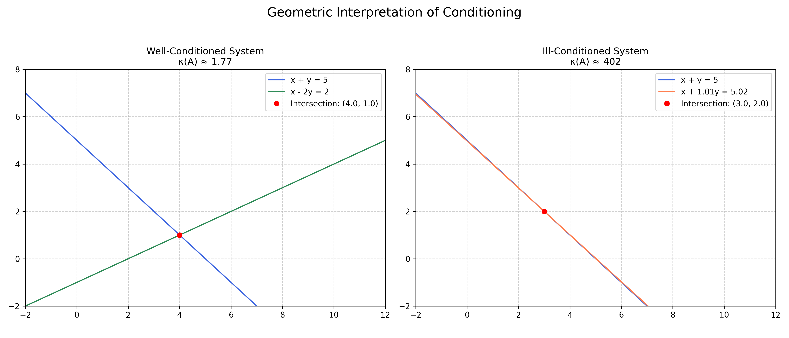
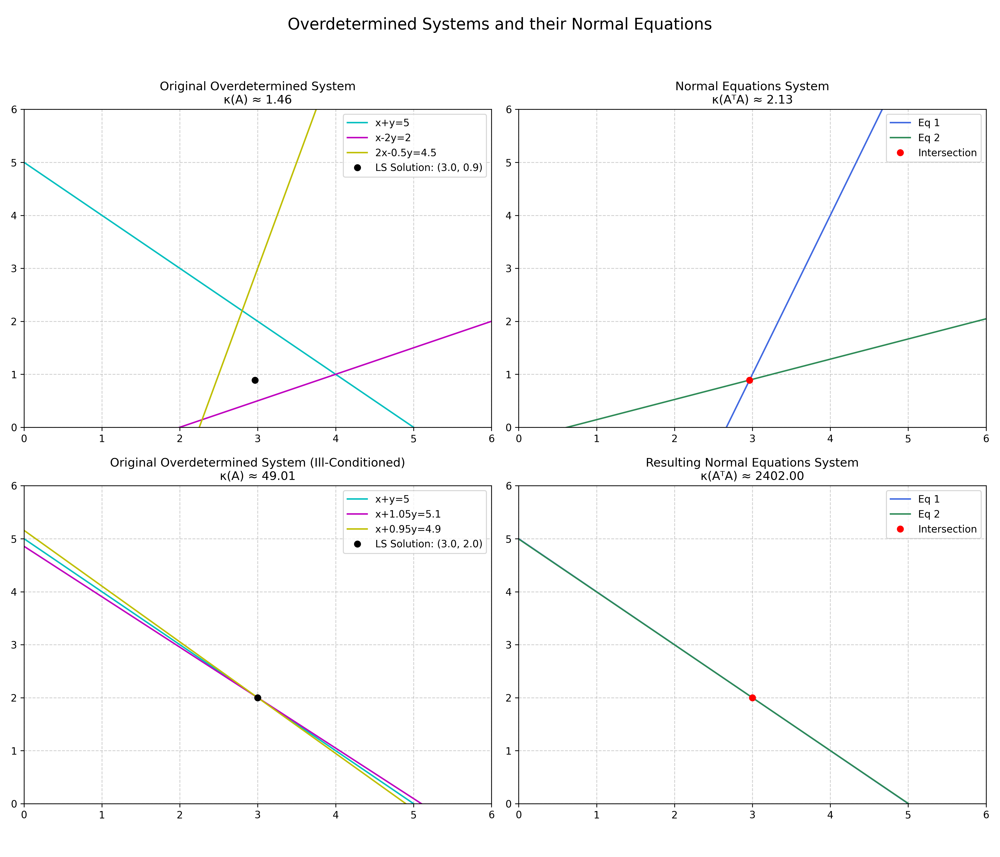
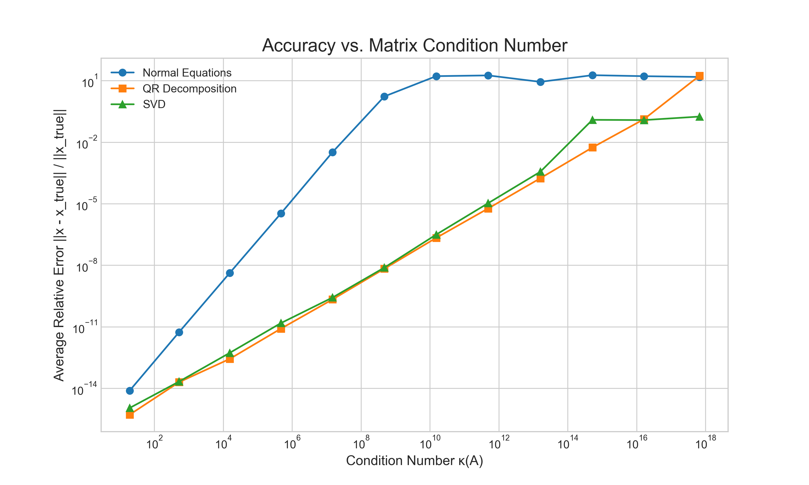
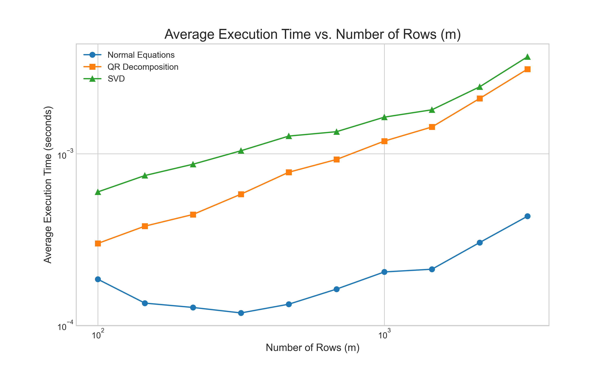

In the world of data analysis, theory and reality often collide. We may have a strong theoretical reason to believe that a relationship between two variables is linear, yet when we plot the data points, they rarely fall perfectly on a single, straight line. Measurement errors, environmental noise, and unmodeled physical effects all conspire to scatter our observations. This discrepancy presents a fundamental challenge: how do we find the line of best fit? How do we distill the underlying trend from noisy, imperfect data? This is the essence of the least squares problem.
Imagine we have collected a set of $m$ data points, $(t_1, y_1), (t_2, y_2), \dots, (t_m, y_m)$, and we wish to fit a model of the form $y = c_0 + c_1t$. To translate this abstract model into a concrete mathematical problem, we must enforce this relationship for every data point we have measured. This translates our single modeling goal into a system of $m$ simultaneous linear equations:
$c_0 + c_1t_2 = y_2$
...
$c_0 + c_1t_m = y_m$
Because we typically have far more data points than parameters in our model (i.e., $m > 2$), this is necessarily an overdetermined system. It is the direct mathematical consequence of applying a simple model to a rich dataset. We can express this system concisely in matrix form as $\mathbf{A}\mathbf{x} = \mathbf{b}$, where $\mathbf{A}$ is an $m \times 2$ matrix, $\mathbf{x}$ is the $2 \times 1$ vector of unknown coefficients $[c_0, c_1]^T$, and $\mathbf{b}$ is the $m \times 1$ vector of observed $y$ values. In any realistic scenario, the presence of noise means no single choice of $\mathbf{x}$ can satisfy all equations simultaneously. The system is inconsistent.
This forces us to ask a more practical question: If an exact solution is impossible, what is the best possible approximate solution? Our intuition suggests we should choose the coefficients $\mathbf{x}$ that make the fitted line $\mathbf{A}\mathbf{x}$ "as close as possible" to the observed data $\mathbf{b}$. We can formalize this by defining a residual vector $\mathbf{r} = \mathbf{b} - \mathbf{A}\mathbf{x}$, which measures the error at each data point. The goal then becomes to minimize the overall magnitude of this residual. By choosing to minimize the Euclidean norm of the residual, $\|\mathbf{b} - \mathbf{A}\mathbf{x}\|_2$, we arrive at the method of least squares. The name arises because minimizing the vector norm is equivalent to minimizing the sum of the squared individual errors.
While the problem is simple to state, the journey to a reliable and accurate solution is surprisingly deceptive. The choice of algorithm is not merely an implementation detail; it is fundamental to achieving a correct result. In this article, we will explore this journey. We will begin with the most direct and intuitive method, the Normal Equations, and uncover the hidden numerical instabilities that can render it useless. This discovery will lead us to a crucial discussion of a matrix's "health" through the concept of the condition number. Finally, armed with this knowledge, we will leverage the powerful decompositions from our previous articles—QR factorization and the yet-to-be-explored Singular Value Decomposition (SVD)—to construct algorithms that are not only elegant but also robust in the face of computational adversity.
The Normal Equations: An Intuitive but Flawed Approach
Having defined our objective as minimizing the function $f(\mathbf{x}) = \|\mathbf{b} - \mathbf{A}\mathbf{x}\|_2^2$, we can turn to calculus to find the vector $\mathbf{x}$ that achieves this minimum. By taking the gradient of $f(\mathbf{x})$ with respect to $\mathbf{x}$ and setting it to zero, we arrive at a result that is central to the history of linear algebra and scientific computing. This derivation, which can be found in any standard text on matrix analysis, yields the famous Normal Equations:
The appeal of this transformation is immediately obvious. Our original problem involved the $m \times n$ matrix $\mathbf{A}$, which was tall and skinny and for which no exact solution existed. The Normal Equations present us with a new matrix, $\mathbf{A}^T\mathbf{A}$, which is a small, square $n \times n$ matrix. This converts the overdetermined problem into a standard square system of linear equations that can, in principle, be solved directly. We have seemingly simplified the problem, turning it into a form that is solvable with the tools we developed in the first article of this series, such as LU decomposition.
This convenience, however, comes at a steep and hidden price. The critical step—the formation of the matrix $\mathbf{A}^T\mathbf{A}$—can be a numerically destructive act. If the columns of our original matrix $\mathbf{A}$ are close to being linearly dependent, the matrix is said to be ill-conditioned. The process of multiplying $\mathbf{A}$ by its own transpose squares this sensitivity, potentially erasing the subtle but critical information in our data that was already difficult to extract. Before we can build a robust solver, we must first understand how to measure this sensitivity and quantify the "health" of a matrix.
Condition Number as Measure of Problem Sensitivity
The flaw in the Normal Equations is not algebraic; it is a numerical shortcoming. To understand it, we must formally introduce the concept of a problem's "conditioning." A problem is well-conditioned if small changes in the input data lead to small changes in the output solution. Conversely, an ill-conditioned problem is one where minuscule perturbations in the input can cause massive, disproportionate changes in the result, rendering any computed solution suspect.
To make this discussion more concrete, we can visualize these concepts. The simple analogy of two intersecting lines, as shown in Figure 1, is effective. A well-conditioned system involves two lines that intersect at a distinct, healthy angle. The intersection point is robust. In contrast, an ill-conditioned system can be represented by two nearly parallel lines. While they still intersect, their intersection point is extremely sensitive; a tiny change in one line's slope or position can cause a dramatic shift in the solution.

In linear algebra, the condition number, denoted $\kappa(\mathbf{A})$, is the formal measure of this sensitivity. It quantifies how much the relative error in the output vector $\mathbf{x}$ can be amplified compared to the relative error in the input vector $\mathbf{b}$. A small condition number (close to 1) signifies a well-conditioned problem. A large condition number indicates an ill-conditioned problem, where floating-point errors in the input can be magnified into catastrophic errors in the output. For a non-square matrix $\mathbf{A}$, the condition number is defined as the ratio of its largest singular value to its smallest, a concept we will explore fully when we introduce the SVD.
This geometric intuition extends to the least squares problem itself as shown in Figure 2. Consider an overdetermined system of three nearly parallel lines in a plane, for which we seek the single point that is "closest" to all three. When we form the Normal Equations, we transform this problem into finding the intersection of two new lines. If the original three lines were already nearly parallel, the two lines of the Normal Equations become even more so, making their intersection point—the final solution—even more sensitive to small errors. This geometric degradation of the problem is a direct visual consequence of the underlying mathematics.

Here we arrive at the theoretical core of the issue. The process of forming the Normal Equations introduces a critical change to the problem's numerical properties. While the algebraic solution is the same, the numerical sensitivity is not. The condition number of the new matrix $\mathbf{A}^T\mathbf{A}$ is related to the condition number of the original matrix $\mathbf{A}$ by a simple, devastating relationship: $\kappa(\mathbf{A}^T\mathbf{A}) = (\kappa(\mathbf{A}))^2$.
A Stable Solution via QR Decomposition
Having established the dangers of the Normal Equations, we now present our first robust alternative. The method leverages the QR decomposition, which we explored in a previous article, to sidestep the instability. It is important to clarify a detail here. For an $m \times n$ matrix $\mathbf{A}$ where $m > n$, the QR decomposition can come in two forms: the "full" decomposition, where $\mathbf{Q}$ is a square $m \times m$ matrix, and the "reduced" or "thin" decomposition, where $\mathbf{Q}$ is an $m \times n$ matrix and $\mathbf{R}$ is a square $n \times n$ matrix.
The reduced form is more computationally practical. It requires less memory; for a tall, skinny matrix where $m \gg n$, storing the $m \times n$ matrix $\mathbf{Q}$ is more efficient than storing the potentially enormous $m \times m$ version. Furthermore, algorithms can avoid calculating the last $m-n$ columns of the full $\mathbf{Q}$, which are unnecessary for the least squares solution, thereby saving floating-point operations. In this reduced form, while $\mathbf{Q}$ is not strictly a square orthogonal matrix, it is a rectangular matrix with orthonormal columns. This provides the crucial property we need: $\mathbf{Q}^T\mathbf{Q} = \mathbf{I}_{n \times n}$.
The power of this approach stems from a fundamental geometric property: matrices with orthonormal columns preserve lengths. Multiplying a vector by such a matrix $\mathbf{Q}$ or its transpose $\mathbf{Q}^T$ acts as a rotation or reflection, which changes the vector's direction but not its Euclidean norm. This is the key to safely transforming the least squares problem. Our goal is to find the vector $\mathbf{x}$ that minimizes the length of the residual, $\|\mathbf{b} - \mathbf{A}\mathbf{x}\|_2$. By substituting $\mathbf{A} = \mathbf{Q}\mathbf{R}$ (using the reduced form), the objective becomes minimizing $\|\mathbf{b} - \mathbf{Q}\mathbf{R}\mathbf{x}\|_2$. Since multiplying by $\mathbf{Q}^T$ does not change the norm, we can do so without altering the solution:
The identity $\mathbf{Q}^T\mathbf{Q} = \mathbf{I}$ leads to the following simplification:
This new formulation is vastly superior from a computational standpoint. The original, complicated overdetermined system has been converted into an equivalent problem involving the upper triangular matrix $\mathbf{R}$. The least squares solution can now be found by solving the square system $\mathbf{R}\mathbf{x} = \mathbf{Q}^T\mathbf{b}$, which is easily done via back substitution.
The SVD: The Gold Standard for Analysis and Solution
While the QR approach is a stable and efficient workhorse, the Singular Value Decomposition (SVD) represents the gold standard for both solving and analyzing linear systems. It is arguably the most important and revealing matrix factorization in all of numerical linear algebra. The SVD decomposes any $m \times n$ matrix $\mathbf{A}$ into three other matrices:
Here, $\mathbf{U}$ is an $m \times m$ orthogonal matrix, $\mathbf{V}$ is an $n \times n$ orthogonal matrix, and $\boldsymbol{\Sigma}$ is an $m \times n$ rectangular diagonal matrix. The diagonal entries of $\boldsymbol{\Sigma}$, denoted $\sigma_i$, are the singular values of $\mathbf{A}$, and they are, by convention, non-negative and sorted in descending order.
The power of the SVD comes from how it cleanly separates the geometry of the linear transformation defined by $\mathbf{A}$ into rotation, scaling, and another rotation. This deep geometric insight allows for an elegant and exceptionally stable solution to the least squares problem via the pseudoinverse of $\mathbf{A}$, denoted $\mathbf{A}^+$. The SVD provides a direct way to construct it:
where $\boldsymbol{\Sigma}^+$ is formed by taking the reciprocal of the non-zero singular values in $\boldsymbol{\Sigma}$ and then transposing the resulting matrix. The least squares solution is then given simply by $\mathbf{x} = \mathbf{A}^+\mathbf{b}$.
The primary advantage of the SVD over QR emerges when a matrix is rank-deficient, or very close to it. A matrix is rank-deficient if its columns are not all linearly independent. In this situation, there is no unique solution to the least squares problem; instead, there is an entire subspace of vectors that all minimize the residual $\|\mathbf{b} - \mathbf{A}\mathbf{x}\|_2$ equally well. While the QR method can become unstable or fail in this scenario, the SVD handles it gracefully. The cause of this lies in the structure of the $\mathbf{R}$ matrix from the QR factorization. If $\mathbf{A}$ is perfectly rank-deficient, at least one of the diagonal elements of $\mathbf{R}$ will be exactly zero, causing the final back-substitution step to fail with a division-by-zero error. More practically, if $\mathbf{A}$ is merely ill-conditioned, a diagonal element of $\mathbf{R}$ may become a tiny, near-zero number. Division by this number, while technically possible, makes the solution numerically unstable by catastrophically magnifying any floating-point errors. The SVD, by explicitly identifying these zero (or near-zero) singular values, avoids this problem entirely.
The solution $\mathbf{x} = \mathbf{A}^+\mathbf{b}$ is not just any solution from this infinite set; it is the unique solution that also has the smallest possible Euclidean norm, $\|\mathbf{x}\|_2$. This minimum-norm property is often desirable as it represents the "simplest" or most economical solution.
Numerical Comparison
To synthesize these concepts, we performed a numerical experiment to compare the three methods across the key metrics of accuracy and execution time.
First, we tracked the relative error of the computed solution as a function of the matrix condition number. The results, shown in Figure 3, are unequivocal. The error for the Normal Equations method explodes as the matrix becomes more ill-conditioned. In contrast, both the QR and SVD-based methods remain highly accurate, with their errors growing gracefully and staying many orders of magnitude smaller than the Normal Equations error.

Next, we compared the computational cost by timing each method on well-conditioned matrices of increasing size. The results, shown in Figure 4, align with our complexity analysis. The Normal Equations method is consistently the fastest, benefiting from highly optimized matrix multiplication routines. The QR method is moderately slower, while our explicit SVD-based solution is the most computationally intensive.

Together, these experiments paint a clear and practical picture. The Normal Equations offer speed but at the cost of unacceptable instability for ill-conditioned problems. For problems that are known to be well-conditioned and full-rank, QR decomposition provides an excellent balance of speed and stability. The SVD, while the most computationally expensive, serves as the ultimate diagnostic tool, providing the most reliable solution when a matrix is rank-deficient or its rank is unknown.
Conclusion
Our exploration of the least squares problem reveals a crucial lesson in numerical computing: the most intuitive algebraic path is not always the most reliable. The Normal Equations, while appealing in their simplicity and speed, tell how finite-precision arithmetic can undermine a theoretically correct method by squaring the condition number. This establishes the condition number as an essential diagnostic tool and highlights why methods based on orthogonal factorizations are the professional standard. Our experiments confirmed this clear hierarchy: QR decomposition offers a stable and efficient balance for most problems, while the SVD provides the ultimate robustness, offering diagnostic insight and gracefully handling the rank-deficient cases where other methods fail. This underscores the central theme that a deep understanding of computational trade-offs is a practical necessity for ensuring the correctness and reliability of any numerical result.